|
 | "Egyszerre eszembe jutott az, amit Marat
Barbaroux-nak mondott: »Adjatok nekem négyszáz gyilkost és megcsinálom a
forradalmat«… Szívemben egy pillanatra megállt a vér. Micsoda embereknek került a
kezükbe az ország és mindnyájunk sorsa!"
- - Tormay Cécile: Bujdosó
könyv
A
Hollán-emléktábla után kutakodva számos érdekes újságcikket szedtem össze az
Országos Széchényi Könyvtárban 1919-ből. Bár magáról a tábláról nem találtam
írást, de a gyilkosságról, illetve más, korabeli történelmi eseményekről igen. Így
például a Tisza István-gyilkosság nyomozásáról, majd pedig 1919 nyarától a
kommunista gyilkosságok pereiről. Még ma is azt tanítják az iskolai történelemkönyvek,
hogy Tisza Istvánt ismeretlen katonák lőtték agyon, pedig a korabeli sajtóból
egyértelműen kiderül, hogy meglettek a tettesek. Az egész közvéleményt
értelemszerűen izgalomban tartó nyomozásról naponta írtak a pesti újságok.
Hogy miféle világállapotok uralkodtak 1918-19-ben, hamar
átláthatjuk, ha csak végiglapozunk egy újságot. Keleten vörös őskommunizmus tombol,
Nyugaton még mindig tele van minden szögesdróttal és gödörrel. Németországban a
spartakisták csinálják a fesztivált, Bécsben vörösbarát kormány üldögél,
menedékjogot adva Kun Bélának. Mi még istenesen vagyunk, tőlünk csak az országunkat
akarják elvenni. A román hadsereggel még nincsen sok gond, mert még nem jöttek ide,
de a háborút már elvesztettük, és Károlyi hazaáruló pártja már szervezkedik az
ország ellen. De egészen más minderről egy száraz történelemkönyvben olvasni, mint egy
újságban. Csak egy apró hírt mutatok a 8 órai
Ujság 1918 szeptember 13-i számából.
Elvannak hát a ruszkik, de mi a helyzet
idehaza? 1918 október 17-én felháborító jelenet zajlik le az Országgyűlésben.
Lovászy Márton, a Károlyi-párt képviselője hetykén odaveti az országnak, kikkel is
vannak ők. "Vegyék tudomásul, hogy ántántbarátok
vagyunk!" Egy hadban álló Magyarország parlamenti pártja az ellenség oldalára
áll. Az a párt, amelyiknek elnökének szobrát ma könnyek közt koszorúzza minden évben
a jelenlegi kormány...
Ugyanezen a napon merényletet követnek el
gróf Tisza István miniszterelnök ellen. Ez még nem a későbbi, sikeres merénylet. A
támadó revolvere csütörtököt mond. Érdemes elolvasni a cikket. Így reagált egy
igazi államférfi egy igazi merényletre. Több szó nem is esett róla. És hogy
reagált Gyurcsány arra, hogy műanyag pisztolyt fogott rá valaki egy majálison? Hetekig
ment a hiszti, hogy "de mi lett volna, ha..." A merénylő neve is érdekes: Lékai-Leitner János. Természetesen zsidó, hiszen akkoriban, egészen a második
világháborúig, a zsidók gyakran egyszerre használták magyarított és eredeti nevüket.
Később látni fogjuk, hogy a kommunisták neveit is így szerepeltetik mind az
újságcikkekben, mind a bírósági iratokban. Lékai-Leitnert a kommunisták szabadítják ki a
börtönből később, ami nem is csoda, hiszen jó barátja Landler Jenőnek, a későbbi
népbiztosnak. A második világháború után, egészen 1989-ig tér volt róla elnevezve
Budán.
Alig pár napra rá azonban már sikerrel
járnak a merénylők. Tisza Istvánt saját házában gyilkolják meg. Ekkor természetesen
még ismeretlenek a tettesek, de ez csak modern történelemkönyveink szerint marad
így. Ugyanezek a könyvek állítják azt is, hogy néhány közkatona bosszúból ölte
meg, a fronton elesett társaiért. Természetesen ez sem igaz. Ekkor már javában folyik
a Károlyi-párt puccsa. A forgatókönyv ugyanaz, mint az oroszoknál: először
"polgári" kormány alakul, aztán ez sajnos igen gyenge kezűnek mutatkozik, és azok
a fránya kommunisták, nebbich, hát nem átveszik a hatalmat? Ugyanez történt
1946-ban is, és egyébként ma is ez folyik. A kommunistákat persze néha máshogy hívják,
de ugyanaz a társaság.
Nézzük, mit írt a 8 órai Ujság Tisza haláláról.
Jellemző, hogy magáról a merényletről nem is született híradás, mert olyan gyorsan
terjedt el a híre Budapesten, mindenféle újság nélkül is.
És most... ugorgyung. A következő újságot már 1919 november 15-én vesszük a kezünkbe.
Tisza István meggyilkolásának ügyében egészen eddig nem volt semmiféle nyomozás. Ezután
azonban naponta kerültek elő bizonyítékok, és már az első napokban nyilvánvalóvá
vált, hogy az időközben külföldre menekült Károlyi Mihály tudott a merényletről,
és támogatta is azt. Érdemes elolvasni ugyanezen napon a bevonuló Nemzeti Hadsereg
méltatását is a főoldalról.
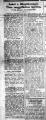 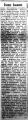A kommunista gyilkosok utáni nyomozásokról,
büntetőperekről például az Az Est című lap 1919
szeptember 30-i, illetve a 8 órai Ujság 1919
december 16-i számában olvashatunk. A kommunisták közül elsőként bizonyos Kohn-Kerekes
Árpád kötélkiutalását intézte a T. Bíróság. Az egész oldalt betöltő cikk révén ma is
képet alkothatunk a tanácskormány rémtetteiről.
A tömeges rablások kiváló példája
volt, amikor Rákosi Mátyás parancsára Budapest minden lakosának be kellett szolgáltatnia
minden függönyét és szőnyegét. A zsidók természetesen tudták, miből lehet pénzt csinálni,
hiszen a felgyűlt hatalmas mennyiséget el akarták adni, hogy egy kis "zsebpénzük" legyen.
Az Az Est 1919 október 3.-i számából megtudhatjuk,
hogy Budapest szőnyegei egyetlen bátor embernek köszönhetik
megmenekülésüket.
Ugyanezen lap 1919 október 26-án
részletes írást közölt arról, hogyan menekült ki az országból Károlyi Mihály, és vitte magával
az ellopott, elsikkasztott koronamilliókat. Nem is csoda, hogy az MSZP annyira
tiszteli ezt az embert...
Nagy gondot okozott akkoriban a
"forradalmi eszmék" fertőző hatása a közoktatásban. Az újságok szinte naponta írtak arról, hogy
mely budapesti iskolákból kellett kicsapni tanulókat azért, mert a tömeggyilkos
kommunista rendszert éltették, az Internacionálét énekelték, vagy magyarellenes
agitációt végeztek. Különös módon a legtöbbjüknek elég jellegzetes családneve volt, és
egyikük magyarellenes viselkedése indokául a "hitsorosai" sorsát hozta fel. Az is
érdekes, hogy némelyikük ellen azért folyt eljárás, mert a kommün idején politikai
nyomozónak (!) jelentkezett. Sejthető, hogy ezeknek a kicsapott senkiháziaknak harminc
évvel később valóra is vált az álmuk...
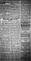 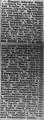 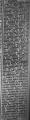 Mindeközben persze tovább folyt a nyomozás
Tisza István gyilkosai után. 1919 október 28-án Almásy Denise grófnő, az egyik szemtanú
fényképről felismerte a tetteseket. 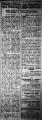 Hogyan viselték sorsukat az elfogott
kommunista vezérek? Az Est 1919 október 30-i számában olvashatunk arról, mivel töltötte napjait
Cserny József, a Lenin-fiúk vezetője kivégzése előtt. Szegény, kiderül, hogy mindenki
utálta. De az ellátásra egy szava sem lehetett. Első osztályú kötelet is kapott
később. 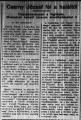Másnap újabb esemény következett be a
Tisza-gyilkosság nyomozásában. Újabb részletek kerültek napvilágra, egyértelművé vált, hogy a
Károlyi-féle Nemzeti Tanács tagjai tudtak a merényletről, és megnevezésre került a
gyilkos, Pogány József is. Másnap pedig helyszínbejárást - ahogy akkoriban írták, "tetemrehívást" -
tartottak a gyilkosság helyszínén. November 2-án sikerült azonosítani, ki járt a
gyilkosság napján Tisza Istvánnál, és mi történt akkor. Gyanúba keveredett Dobó István
és Horváth-Horvatovics István is, akikről később kiderül, hogy valóban ők voltak az
elkövetők. Íme a nyomozás alakulása, napról napra. 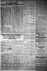 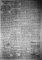 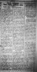 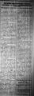 1919 november 12-én pedig vallomást tett Dr.
Szentkirályi Béla, aki a patkánylázadás idején a budapesti rendőrség
főkapitány-helyettese volt. Kiderült, hogy Károlyi Mihály személyesen utasította a
rendőrséget a Tisza-gyilkosság nyomozásának azonnali leállítására. 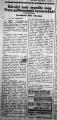Nem állt meg közben a kommunista tömeggyilkosok
utáni nyomozás, illetve bírósági tárgyalásuk lefolytatása sem. 1919 november 23-án
részletes, háromoldalas beszámoló olvasható Az
Est-ben a Lenin-fiúk főtárgyalásáról. Érdekes történelmi dokumentum ez a riport,
érdemes végigböngészni. Hogy a vádlottak a gyilkosság kifejezésére miért a "gajdeszbe
küldeni" kifejezést használják, nem is kommentálom. A későbbi napokon megjelent
tudósításokat is melléteszem. A közvéleményt nagy izgalomban tartó perről heteken át nagy terjedelemben
értekezett a sajtó. 1919 november 27-én került sor a két Hollán Sándor lánchídi
meggyilkolásának tárgyalására. Erről ismét több oldalas tudósítás jelent meg Az Est-ben. Ugyanezen a napon, rögtön e tudósítás után
olvasható a hír: beismerő vallomást tett Tisza István gyilkosa, Pogány József. Ennyit a mai
történelemkönyvekről! A beismerő vallomást tevő Sztankovszki Tibor részletesen
feltárta, kik és hogyan ölték meg a kiváló miniszterelnököt, és fény derül a
Károlyi-féle Nemzeti Tanáccsal, illetve a tanácskormánnyal ápolt kapcsolatukra
is. 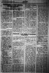 A rövidke összefoglaló után azonban a lap
másnapi számában már részletes, egész oldalas tudósítás is olvasható a gyilkosok beismerő
vallomásairól. A gaztett minden részlete, mozzanata ismertté vált. A Hollán-gyilkosságról is további részletek derültek ki ezen a napon.
Vallomást tett Hollán Sándorné, ifjabb Hollán Sándor özvegye, illetve Hollán Miklós, Hollán
Sándor öccse, akik saját szemszögükből mondták el annak a borzalmas éjszakának a
történetét. A november 29-i lapszámban pedig fény derül egy történelmi mítosz
eredetére. Manapság megélhetési rettegőink gyakran hivatkoznak a "nyilas házmesterekre",
akiktől rettegett mindenki, mert csak egy telefonba került neki, és a nekik nem tetsző
lakót már vitték is a Dunába lőni. Nos, a mese eredete a Hollán-gyilkosság, csak
természetesen a házmester nem nyilas, hanem kommunista volt, és nem az áldozat volt
zsidó... Így működik a héber mesemondás: saját gaztettük történetét addig
csűrik-csavarják, míg sok évvel később ők lesznek a sajnálatra méltó áldozatok. Jó
megjegyezni ezt az apróságot, és ha megint a "nyilas házmesterekre" hivatkozik valaki,
felvetni neki, hogy mondjon erre egy dokumentált példát, mert 1919-ből éppenséggel tudunk az
ellenkezőjére... 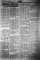Az ügy lezárult, a gyilkosokat felkötötték,
lecsukták. Ám ne higgyük, hogy Horthy bevonulásával azonnal rend lett. Még 1919
decemberében is aktívkodtak egyes kommunista bűnözők. Kevesen tudják, hogy Szamuely
Tibornak volt két testvére is, akik semmivel sem voltak különbek hírhedt bátyjuknál.
Egyikük, Szamuely György hűségesen követte Tibor példáját, és önként ment a pokolra,
mielőtt segítettek volna neki. Szamuely László azonban továbbra is a proletárdiktatúra
híve maradt, és előbb Korvin-Klein Ottó kiszabadítására, majd a kitört zűrzavarban
Horthy Miklós meggyilkolására készült. Szerencsére Horthy Miklós hírszerzése
meghiúsította a tervet. Íme az Az Est 1919 december
28-i címlapja a tudósítással. 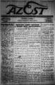Ezzel az újsághírrel pedig a gyűjtés végére
értem, és nem értem, miért nincs a CD-n talán a legérdekesebb. Talán elfelejtettem
elmenteni a könyvtárban. Ennek lényege, hogy 1919 végén, Szeged környékén a csendőrök
elfogtak egy csavargó, rongyos nőt, bizonyos Klein Mártát. Kiderült, hogy ő is
országosan körözött vörös terrorista, Szamuely Tibor jobbkeze volt, maga is számos
gyilkosságban vett részt, bérgyilkosként is tevékenykedett. Ám ami érdekesebb, hogy a
nyomozók előtt felfedte, hogy Szamuely utasította őt, hogy ölje meg Kun Bélát, mert
Szamuely szerint Kun nem volt eléggé radikális. A gyilkosságra csak a tanácskormány
bukása miatt nem került sor. Ha legközelebb a könyvtárban járok, megpróbálom
előkeresni ezt az érdekes
hírecskét.
| | vissza a főoldalra |  |
| 1 2 3 4 5 6 7 | |  | | | | | | | | | | | | | | | | | | | | 1 2 3 4 5 6 7 |  |
|


túraszervező
túra-rss
mi ez?

legjobbak
legolvasottabbak
tartalomjegyzék
rss feed

AboryM
Caesar
Count Grishnackh
cscsabi
eürdüngh
Feki
GyalogKakukk
Ishukone
Kadzseszka
LACI1993
Mini
Muska
Rommel
Segi
Takezó
tommylee
vikcee
|